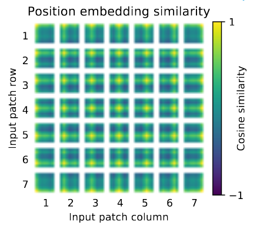
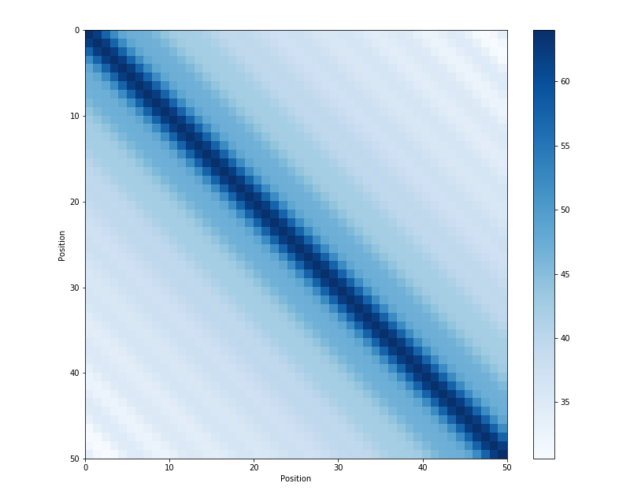

Transformer中的位置编码
简介
众所周知，Transformer 中的注意力机制并不区分各个 token 的顺序，可以认为是对 token 集合进行操作，因此在需要明确 token 顺序的场景下，我们必须人为地在 token 中注入位置信息，这就是位置编码 (positional encoding)。理想的位置编码应该具有如下性质：
- 唯一性：每个位置都配备唯一的编码；
- 相对性：两个位置编码之间存在只与相对位置有关（与绝对位置无关）的关系式；
- 外推性：模型能够直接泛化到比训练序列长度更长的情形下；
- 远程衰减性：随着两个位置之间的距离变大，它们位置编码的相似度变小。
可学习位置编码
最简单的想法就是让模型自己学习位置编码。设 \(\{\mathbf x_i\}_{i=0}^{N-1}\) 表示 token embedding 序列，其中 \(\mathbf x_i\in\mathbb R^d\). 可学习位置编码用 nn.Embedding() 初始化 \(N\) 个 \(d\) 维向量 \(\{\mathbf p_i\}_{i=0}^{N-1}\) 作为位置编码，与对应位置的 embedding 相加，作为可学习参数参与训练。
可学习位置编码原理简单，实现方便，但是缺点也很明显：一是位置编码是模型隐式地学习出来的，因此不能保证具有相对性和远程衰减性；二是位置编码的数量固定为训练时设置的数量，因此无法在测试时外推到更长的序列上。
使用可学习位置编码的工作包括 BERT[2], GPT-1[3], ViT[4] 等。下图展示了预训练的 ViT 中可学习位置编码互相之间的 cosine 相似度：

可以看见，模型确实学习到了合理的位置编码——距离越近，编码相似度越高。另外，由于图像数据是 2D 的，上图还显现出了有趣的行结构与列结构，也证明了可学习位置编码的有效性。
Sinusoidal 位置编码
设 \(\{\mathbf x_i\}_{i=0}^{N-1}\) 表示 token embedding 序列，\(\{\mathbf p_i\}_{i=0}^{N-1}\) 表示位置编码序列。Sinusoidal 位置编码[1]设计为： \[ \begin{align} p_{i, 2j} = \sin\left(\frac{i}{10000^{2j/d}}\right),\quad p_{i, 2j+1} = \cos\left(\frac{i}{10000^{2j/d}}\right) \end{align} \] 其中 \(p_{i,k}\) 表示 \(\mathbf p_i\) 的第 \(k\) 个分量，计算出的 \(\mathbf p_i\) 将与 \(\mathbf x_i\) 相加后送入后续模块。
上面这个式子看起来有点抽象，我们不妨可视化一下：

图中共有 50 个位置编码，每个编码是 128 维的向量。第 \(i\) 行代表位置编码 \(\mathbf p_i\) 这个向量，第 \(k\) 列代表所有位置编码在第 \(k\) 维上的取值。可以看见，若固定维度 \(k=2j\) 或 \(k=2j+1\)，那么各位置编码在这一维度上连起来形成一条周期为 \(2\pi\cdot 10000^{2j/d}\) 的三角函数曲线。例如：
- 当 \(j=0\) 时，曲线周期为 \(2\pi\)，即上图第一列形成一条周期为 \(2\pi\) 的三角函数曲线；
- 当 \(j=\lfloor d/2\rfloor\) 时，曲线周期为 \(20000\pi\)，即上图最后一列形成周期为 \(20000\pi\) 的三角函数曲线。不过此时周期太大，所以看不出变化。
可见，sinusoidal 位置编码的设计思路与二进制编码非常像——低位周期小频率高、高位周期大频率低，因此在某种程度上，sinusoidal 位置编码可以看作是二进制编码的连续版本。
现在，有几个问题有待回答：
- 为什么既要用 \(\sin\)，又要用 \(\cos\)？
- 为什么周期要设计为指数函数的形式？
- 为什么底数是 10000？
对于第一个问题，答案是：这样设计使得 sinusoidal 位置编码具有相对性。具体而言，考虑位置偏移量 \(\delta\)，有： \[ \begin{bmatrix}p_{i+\delta,2j}\\p_{i+\delta,2j+1}\end{bmatrix}=\begin{bmatrix}\cos(\delta\omega_j)&\sin(\delta\omega_j)\\-\sin(\delta\omega_j)&\cos(\delta\omega_j)\end{bmatrix} \begin{bmatrix}p_{i,2j}\\p_{i,2j+1}\end{bmatrix} \] 其中 \(\omega_j=1/10000^{2j/d}\). 这说明 \(\mathbf p_{i+\delta}\) 各维度可以由 \(\mathbf p_i\) 各维度线性表示，且表示系数只与相对位置 \(\delta\) 有关，与绝对位置 \(i\) 无关。如果只用 \(\sin\) 或只用 \(\cos\)，也许就没有这样的线性表示了。当然，\(\sin\) 与 \(\cos\) 不必按奇偶位置交替放置，也可以前一半放 \(\sin\)，后一半放 \(\cos\).
对于第二个问题，个人倾向于认为这只是作者的经验性选择，没有什么特别的道理，也许线性形式或者多项式形式都是可行的。
对于第三个问题，根据我们前面的讨论，可以知道底数与最大周期息息相关——若底数为 \(B\)，则最大周期为 \(2B\pi\). 可以肯定的是，\(B\) 应该足够大以保证最大周期能够覆盖序列长度，否则可能出现两个位置有相同（或相近）的位置编码，违反唯一性。但是 \(B=10000\) 意味着最大周期为 \(20000\pi\approx62\text{k}\)，显然远远大于当年（论文发表于 2017 年）实际需要的序列长度，为什么不选小一些的数呢？这个问题我还没有确切的答案。有人认为，位置编码与 token embedding 相加会干扰 token embedding 中的信息，而底数 10000 让位置编码的后半部分基本相同而变得无用，正好为 token embedding 留下了空间。
最后，由于三角函数具有周期性，因此 sinusoidal 位置编码具有一定（比较有限）的外推性。另外，sinusoidal 位置编码也具有（大致）远程衰减性，如下图所示：

PyTorch 实现：
1 | |
相对位置编码
相对位置编码不再只关注于给输入的 embedding 注入位置信息，而是结合了 attention 的计算过程进行设计。考虑配备了位置编码 \(\{\mathbf p_i\}_{i=0}^{N-1}\) 的 token embedding 序列 \(\{\mathbf x_i\}_{i=0}^{N-1}\)，则 attention map 的计算过程为： \[ \begin{align} &\mathbf q_i=(\mathbf x_i+\mathbf p_i)\mathbf W_q\\ &\mathbf k_i=(\mathbf x_i+\mathbf p_i)\mathbf W_k\\ &\mathbf v_i=(\mathbf x_i+\mathbf p_i)\mathbf W_v\\ &a_{i,j}=\text{softmax}\left(\mathbf q_i\mathbf k_j^T\right)\\ &\mathbf o_i=\sum_{j}a_{i,j}\mathbf v_i \end{align} \] 其中向量都是行向量。展开 \(a_{i,j}\) 得到： \[ \begin{align} a_{i,j}&=\text{softmax}\left((\mathbf x_i+\mathbf p_i)\mathbf W_q\mathbf W_k^T(\mathbf x_j+\mathbf p_j)^T\right)\\ &=\text{softmax}\left(\mathbf x_i\mathbf W_q\mathbf W_k^T\mathbf x_j^T+\mathbf p_i\mathbf W_q\mathbf W_k^T\mathbf x_j^T+\mathbf x_i\mathbf W_q\mathbf W_k^T\mathbf p_j^T+\mathbf p_i\mathbf W_q\mathbf W_k^T\mathbf p_j^T\right) \end{align} \] 可以看见，所谓位置编码，就是在计算 attention map 的时候，在无位置编码的基础上添加了 2 个与位置编码相关的“一次项”和 1 个“二次项”。现在，为了实现相对位置编码，我们只需将这三项改造为与相对位置 \(i-j\) 有关、或与位置完全无关的项即可。不同论文采用了不同的做法：
论文[5]丢弃与 \(\mathbf p_i\) 有关的项，然后将第三项中的 \(\mathbf p_j\mathbf W_k\) 改作 \(\mathbf R_{i,j}\)： \[ a_{i,j}=\text{softmax}\left(\mathbf x_i\mathbf W_q(\mathbf x_j\mathbf W_k+\mathbf R_{i,j})^T\right) \]
Transformer-XL[6] 和 XLNet[7] 将 \(\mathbf p_j\) 替换为 \(\mathbf R_{i,j}\)，两个 \(\mathbf p_i\mathbf W_q\) 分别替换为可学习向量 \(\mathbf u,\mathbf v\)： \[ a_{i,j}=\text{softmax}\left(\mathbf x_i\mathbf W_q\mathbf W_k^T\mathbf x_j^T+\mathbf u\mathbf W_k^T\mathbf x_j^T+\mathbf x_i\mathbf W_q\mathbf W_k^T\mathbf R_{i,j}^T+\mathbf v\mathbf W_k^T\mathbf R_{i,j}^T\right) \] 进一步地，考虑到 \(\mathbf R_{i,j}\) 所在空间与 \(\mathbf x_j\) 不一定相同，因此将 \(\mathbf R_{i,j}\) 前面的投影矩阵 \(\mathbf W_k\) 换成新的矩阵 \(\tilde{\mathbf W}_k\)： \[ a_{i,j}=\text{softmax}\left(\mathbf x_i\mathbf W_q\mathbf W_k^T\mathbf x_j^T+\mathbf u\mathbf W_k^T\mathbf x_j^T+\mathbf x_i\mathbf W_q\tilde{\mathbf W}_k^T\mathbf R_{i,j}^T+\mathbf v\tilde{\mathbf W}_k^T\mathbf R_{i,j}^T\right) \]
T5[8] 直接丢弃“一次项”，将“二次项”简化为可学习的标量参数 \(\beta_{i,j}\)： \[ a_{i,j}=\text{softmax}\left(\mathbf x_i\mathbf W_q\mathbf W_k^T\mathbf x_j^T+\beta_{i,j}\right) \]
DeBERTa[9] 则丢弃“二次项”，将“一次项”中的 \(\mathbf p_i,\mathbf p_j\) 替换为 \(\mathbf R_{j,i},\mathbf R_{i,j}\)： \[ a_{i,j}=\text{softmax}\left(\mathbf x_i\mathbf W_q\mathbf W_k^T\mathbf x_j^T+\mathbf R_{j,i}\mathbf W_q\mathbf W_k^T\mathbf x_j^T+\mathbf x_i\mathbf W_q\mathbf W_k^T\mathbf R_{i,j}^T\right) \]
RoPE 旋转位置编码
RoPE[10]是当前 LLM 的默认选择，以绝对位置编码的形式实现了相对性，由苏神在他的博客中提出。
首先考虑二维情形，对于 \(\mathbf x\in\mathbb R^2\) 及其位置 \(m\)，RoPE 定义为： \[ \text{RoPE}(\mathbf x,m)=\begin{bmatrix}\cos m\theta&-\sin m\theta\\\sin m\theta&\cos m\theta\end{bmatrix}\begin{bmatrix}x_0\\x_1\end{bmatrix}=\mathcal R_m\mathbf x \] 相当于将 \(\mathbf x\) 逆时针旋转 \(m\theta\) 的角度，其中 \(\theta\) 是一个超参数。在计算 attention 时，取位置 \(m,n\) 上的 \(\mathbf q,\mathbf k\) 做内积，得： \[ \begin{align} \Big\langle\text{RoPE}(\mathbf q,m),\text{RoPE}(\mathbf k,n)\Big\rangle &=\mathbf q^T\mathcal R_m^T\mathcal R_n\mathbf k=\mathbf q^T\mathcal R_{n-m}\mathbf k \end{align} \] 可以看见内积结果只与相对位置 \(n-m\) 有关，这体现出了 RoPE 的相对性。
对于 \(d\) 维情形，不妨设 \(d\) 是偶数，那么将二维情形拼接起来即可： \[ \text{RoPE}(\mathbf x,m)=\begin{equation}\underbrace{\begin{bmatrix} \cos m\theta_0 & -\sin m\theta_0 & 0 & 0 & \cdots & 0 & 0 \\ \sin m\theta_0 & \cos m\theta_0 & 0 & 0 & \cdots & 0 & 0 \\ 0 & 0 & \cos m\theta_1 & -\sin m\theta_1 & \cdots & 0 & 0 \\ 0 & 0 & \sin m\theta_1 & \cos m\theta_1 & \cdots & 0 & 0 \\ \vdots & \vdots & \vdots & \vdots & \ddots & \vdots & \vdots \\ 0 & 0 & 0 & 0 & \cdots & \cos m\theta_{d/2-1} & -\sin m\theta_{d/2-1} \\ 0 & 0 & 0 & 0 & \cdots & \sin m\theta_{d/2-1} & \cos m\theta_{d/2-1} \\ \end{bmatrix}}_{\mathcal{R}_m} \begin{bmatrix}x_0 \\ x_1 \\ x_2 \\ x_3 \\ \vdots \\ x_{d-2} \\ x_{d-1}\end{bmatrix}\end{equation} \] 其中 \(\theta_0,\ldots,\theta_{d/2-1}\) 是超参数，沿用 sinusoidal 位置编码的超参数，可选取 \(\theta_j=10000^{-2j/d}\).
可以看见，RoPE 其实和 sinusoidal 位置编码有很多相似之处，只不过 sinusoidal 是加式编码，而 RoPE 是乘式编码。乘式编码结合 attention 中的内积运算，使得 RoPE 体现出来的相对性比 sinusoidal 位置编码更加“显式”。
参考资料
- Vaswani, Ashish, Noam Shazeer, Niki Parmar, Jakob Uszkoreit, Llion Jones, Aidan N. Gomez, Łukasz Kaiser, and Illia Polosukhin. Attention is all you need. Advances in neural information processing systems 30 (2017). ↩︎
- Devlin, Jacob, Ming-Wei Chang, Kenton Lee, and Kristina Toutanova. Bert: Pre-training of deep bidirectional transformers for language understanding. arXiv preprint arXiv:1810.04805 (2018). ↩︎
- Brown, Tom, Benjamin Mann, Nick Ryder, Melanie Subbiah, Jared D. Kaplan, Prafulla Dhariwal, Arvind Neelakantan et al. Language models are few-shot learners. Advances in neural information processing systems 33 (2020): 1877-1901. ↩︎
- Dosovitskiy, Alexey, Lucas Beyer, Alexander Kolesnikov, Dirk Weissenborn, Xiaohua Zhai, Thomas Unterthiner, Mostafa Dehghani et al. An image is worth 16x16 words: Transformers for image recognition at scale. arXiv preprint arXiv:2010.11929 (2020). ↩︎
- Shaw, Peter, Jakob Uszkoreit, and Ashish Vaswani. Self-attention with relative position representations. arXiv preprint arXiv:1803.02155 (2018). ↩︎
- Dai, Zihang, Zhilin Yang, Yiming Yang, Jaime Carbonell, Quoc V. Le, and Ruslan Salakhutdinov. Transformer-xl: Attentive language models beyond a fixed-length context. arXiv preprint arXiv:1901.02860 (2019). ↩︎
- Yang, Zhilin, Zihang Dai, Yiming Yang, Jaime Carbonell, Russ R. Salakhutdinov, and Quoc V. Le. Xlnet: Generalized autoregressive pretraining for language understanding. Advances in neural information processing systems 32 (2019). ↩︎
- Raffel, Colin, Noam Shazeer, Adam Roberts, Katherine Lee, Sharan Narang, Michael Matena, Yanqi Zhou, Wei Li, and Peter J. Liu. Exploring the limits of transfer learning with a unified text-to-text transformer. Journal of machine learning research 21, no. 140 (2020): 1-67. ↩︎
- He, Pengcheng, Xiaodong Liu, Jianfeng Gao, and Weizhu Chen. Deberta: Decoding-enhanced bert with disentangled attention. arXiv preprint arXiv:2006.03654 (2020). ↩︎
- Su, Jianlin, Murtadha Ahmed, Yu Lu, Shengfeng Pan, Wen Bo, and Yunfeng Liu. Roformer: Enhanced transformer with rotary position embedding. Neurocomputing 568 (2024): 127063. ↩︎
- 苏剑林. (Feb. 03, 2021). 《让研究人员绞尽脑汁的Transformer位置编码 》[Blog post]. Retrieved from https://spaces.ac.cn/archives/8130 ↩︎
- 苏剑林. (Mar. 08, 2021). 《Transformer升级之路：1、Sinusoidal位置编码追根溯源 》[Blog post]. Retrieved from https://www.spaces.ac.cn/archives/8231 ↩︎
- 苏剑林. (Mar. 23, 2021). 《Transformer升级之路：2、博采众长的旋转式位置编码 》[Blog post]. Retrieved from https://spaces.ac.cn/archives/8265 ↩︎
- BERT为何使用学习的position embedding而非正弦position encoding? - 纳米酱的回答 - 知乎 https://www.zhihu.com/question/307293465/answer/1028613658 ↩︎
- Amirhossein Kazemnejad. Transformer Architecture: The Positional Encoding. https://kazemnejad.com/blog/transformer_architecture_positional_encoding/ ↩︎
- Zhang, Aston, Zachary C. Lipton, Mu Li, and Alexander J. Smola. Dive Into Deep Learning. https://d2l.ai/chapter_attention-mechanisms-and-transformers/self-attention-and-positional-encoding.html ↩︎
- Alibi位置向量外推性：看起来很长其实还是短. https://developer.aliyun.com/article/842370 ↩︎
- EleutherAI. Rotary Embeddings: A Relative Revolution. https://blog.eleuther.ai/rotary-embeddings/ ↩︎